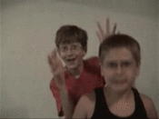

Phineas y Ferb
 De: La Frikipedia, la enciclopedia extremadamente seria.
De: La Frikipedia, la enciclopedia extremadamente seria.
De la serie Programas de TV:
Phineas demostrando que Ferb es el único de los dos que puede tocar la guitarra y bailar a la vez
| Idioma original:
|
Ferb habla marciano y delfín y Phineas danvilliano
|
| Creador:
|
Probablemente; ¡no va a salir de la nada!
|
| Duración:
|
30 min para 2 mini capis de mierda
|
| No. Episodios:
|
Por lo menos 3
|
| No. Temporadas:
|
Van por la tercera temporada
|
| ¿Aún se transmite?:
|
Todavía
|
| Género:
|
Monotonismo.
|
| Nivel de frikismo:
|
It's over 9000!!!
|
| Películas:
|
1 y ya Disney piensa sacar otra
|
¿De donde sacaran tales cabezas?
«Mamáááááááááá, Phineas y Ferb tienen un artículo en La Frikipedia»
~ Candance acusando a sus hermanos una vez más
«¿Que estais haciendo?»
~ Isabella pillando a Phineas en la cama con otra
Estos son dos los nombres de un triangulo y un rectangulo obtusangulo en movimiento pariendo bobadas que supuestamente hacen reir a la chavaleria. Increible, no? El averno nos los ha enviado via rayo católico en forma de serie de televisión para subyugar a la plebe ociosa. Si das al boton de audio de tu mando los notas se ponen a hablar en chiriquistani y por lo menos no te enteras de lo que dicen. Esta serie conocida por el pueblo como "Phineas y Ferb" no es sino la prueba definitiva de que en Disney son adoradores del dios aburrimiento (seguro que hay alguno) los cual explicaría por qué ultimamente sus pelis son tan coñazo (Campo Roka, High School Pornographic Musical...) En Disney se dieron cuenta de que el aburrimiento es la clave de todo: Dios creó el mundo por que se aburría, Newton descubrió la relatividad mientras estaba aburrido bajo un arbol, tú ves esta página porque estás aburrido... Y es por ello que han creado a Phineas y Ferb; dos niños que se aburren tanto tanto que cada día hacen algo chulo en el patio de su casa ¡¡alabado sea el aburrimiento motivador!!
!!Ah¡¡ y por cierto no Olvides su Canal de Television : Pornografic Channel Disney Channel
Genio Infravalorado
Phineas y Ferb están considerados genios, pero lo que nadie sabe es que Ferb es el que hace todo el trabajo: Idea los artilugios, dibuja los planos, construye los aparatos, contratar a las bailarinas exóticas para los descansos... Phineas no es mas que el hermano del genio que se aprovecha de él por que tiene un trauma que le impide hablar de nada concreto excepto frases sueltas (los ornitorrincos son los únicos mamíferos que ponen huevos, No hay nada como tu casa para divertirte, los gladiadores eran romanos, no griegos...) todas ellas muestras de genialidad y conocimiento profundo de las cosas.
Logros de Fineas y Pherb hasta la fecha

|
PELIGRO
Este artículo o sección no es más que una torpe lista. Si crees que vale la pena, edítalo para mejorar su calidad y excelencia
|
Primera temporada
- Una montaña rusa (Causó el deterioro de la Torre Eiffel y mucha gente murió cuando átravesó una carretera, provocando el accidente en cadena más grande que se recuerda en el Área de los Tres Estados).
- Modificar el Monte Rushmore (Lo deterioraron tanto que se acabó cayendo a los tres días de irse ellos; el que hay ahora en América es de cartón piedra, que se volvió a caer encima de tres ancianitas).
- Tunear el coche de su madre y participar en un rally (Atropellaron 3 cabras)
- Una playa (El mar lo pusieron sobre las casas de los vecinos, ¡Sin pagar hacienda, me cago en la puta!)
- Una estampida de vacas (Accidentes múltiples y destrucción de bienes públicos) ¡Y luego dicen que Candace está loca!.
- Crear una montaña de nieve (Contribuyeron al cambio climático, probocaron el adelanto del fin del mundo y un señor que pasó por al lado se resfrió).
- Cazar una momia (aprovecharon que estaban en un museo y robaron medio "Egipto").
- Ser cantantes (Un hombre se suicido por que se pasó 5 años intentando ser cantante y unos crios lo consiguieron en unas horas)
- Ir de Camping y asustar a los campistas con un falso pie grande (causaron 60 dos infartos de miocardio y una estampida de vacas)
- Transformar su casa árbol en un robot (Aplastaron a 34 personas durante la batalla, entre ellas 6 ancianitas.).
- Viajar en el tiempo (Marty McFly desapareció, ¡Qué pena! y los grandes inventores de la historia quedaron comos unos auténticos pringaos).
- Hacen un circo (El otro circo de la ciudad lo arruinaron y vistieron a Perry como un payaso).
- Crean un juguete de moda (Arruinaron a un juguete que salió al mismo tiempo)
- Crear una casa encantada (La asociación de espíritus de la ciudad los demandó por plagio y les dio un ataque a 2 ancianas que pasaron por el lado... ¿Cuántas ancianitas quedan ya?).
- Un torneo medieval (Demanda de la Sociedad Protectora de Animales).
- Crear robots para poderse multiplicar (Un robot se volvió loco y mató a medio barrio, entre ellos a 4 ancianitas mas...).
- Construir un submarino y un rayo reductor (Plagiaron "El chip prodigioso").
- Ser diseñadores (Los grandes diseñadores entraron en una profunda depresión al ver que unos niños consiguieron ser diseñadores)
- Envían un Aserator al espacio (Le dió a una nave extraterrestre y provocaron una invasión espacial a largo plazo).
- Crear un camión monstruo (Candace se saltó un semáforo en rojo y atropello a 5 ancianitas más)
- Tener una aventura pirata (Consiguieron muchas barbas y afearon a media ciudad)
- Reunir a Love Hændel (Hubo un ataque terrorista y mataron a otras 3 ancianitas).
- Ser espías (Robaron un deslizador del gobierno y eso no es bueno...).
- Crear una brecha en el suelo (Una anciana se cayó dentro; se cree que sigue viva, creo).
- Hacer una carrera de cuádrigas (Ben Hur se les unió, pero como ya no está para estos trotes, se acabó despeñando y murió).
- Hacer un tobogán de agua gigante (Ahogaron a varios perros y 2 ancianitas).
- Crear una pista de patinaje (+ terrorismo).
 Phineas y Ferb en la vida real
- Nada de nada (A Candace casi le da algo)
- Resucitar a un Cavernícola (Se volvió loco de tanta tecnología y mató a 12 personas, entre ellas otras 4 ancianitas).
- Crean un submarino para buscar un pez (El submarino está repe).
Roban Crean un Minigolf (Las pelotas perdidas mataron a un gatito y a dos ancianas al resbalarse con ellas y romperse las crismas, wow).- Convertir a Candace en un ornitorrinco (Plagiaron "La Mosca" y Candace tuvo mal).
- Una bola de bolos gigante para ir dentro (Chocaron todos los trenes del subterraneo y provocaron el 2º accidente mas grande de la historia [El primero los provocaron ellos también]).
- Pintar el desierto "Sin Color" (Usaron pintura con plomo).(plagio de vocaloid)
- Hacer un portal a Marte (Dejaron a la NASA como tontos , igual que otras cuantas veces).
- Ir al espacio en una nave espacial (La mitad de la NASA se pegó un tiro; era más de lo que podían aguantar).
- Tallar sus caras en un cometa (Los de copywright se rebotaron).
- Crear unos dibujos animados con su cara (Se plagiaron a sí mismos) hay que ser tonto... .
- Crear un arcoiris (Dejo ciega a la anciana del 1º).
Segunda temporada
- Otro submarino para buscar al monstruo del lago Nesssssss (¿Otro submarino? Ya van 3)
- Crear un traductor de animales y hacer un consultorio para ellos (Los animales acaban en una estampida)
- Enseñar al mundo lo que es un herrete (esto mola; ¡¡¡herreteherreteherreteherrete!!!) ^n00b^
- Hacer una pócima para agigantar (Acaban agigantando el mundo, que se acabará convirtiendo en un agujero negro gigante debido a la gravedad cambiada en el universo)
- Construir un acuario (Los peces los pescan sin licencia) xdxdxdxdxdxdxdxdxdxdxdxd
- Una piscina de gelatina (Se acaba convirtiendo en un monstruo)
- Un tobogán de agua en el Big Ben (Roban una piña) uhhhhhhhhhhh que miedo¡¡...
- Se quedan mirando un invento suyo (Acaban provocando que Candace manche el césped de pintura) noooooo
- Un restaurante de moda (Los ornitorrincos están pasados de moda; ahora molan los tejones)
- Crean un culo de ornitorrinco gigante (Funde una farola de un pedo)
- Entran en un videojuego (La historia acaba con travestismo, y hace que la cosa esa a la que llamas "Consola" sea un pisapapeles)
- Conocer a un extraterrestre (El Area 51 les puso un multazo por no avisarles)
- Compiten con un plagio de sí mismos (Urbanismo; siempre urbanismo...)
- Baten un récord con un avión hecho de periódicos (Todos los periódicos acaban contaminando un lago)
- Hacer un concurso (No hay premio, lo que genera disturbios en la ciudad)
- Hacer un lavadero de coches (Era una tapadera de blanqueo de dinero scout)
- Buscan a Perry fail
- Naufragan en una isla desierta (Usan animales como esclavos)
- Viajar al futuro para buscar un material que les falta (Marty Mcfly reaparece, pero en otra época)
- Encogerse para jugar al escondite (Baljeet destripa una mosca)
- Hacen un crucero romántico (Plagian Titánic)
- Ayudan a crear lo Baljeatles (Plagian a Los Beatles)
- Ferb demuestra que es un ladies man (Ferb mola)
- Crean gafas de rayos X (Acosan sexualmente a medio barrio)
- Hacen un SPA (El barro no estaba homologao ¿¿¿???)
- Se meten en una burbuja (Ponen en peligro a las scout)
- Tratan de animar a Candace (Lanzan por los aires a mas de 50 personas)
- Ayudan a Candace a ser scout (Si Baden Powell levantara la cabeza...)
- Intentan poner a Baljeet en peligro de muerte (eso)
- Son detectives (Plagian "Casablanca", "Starsky y Hutch", "El equipo A" y otros...)
- Reconstruyen un invento de Doofensmith (No sé escribir Dophensmith)
- Encuentran la Atlántida y la reflotan (su poblción de peces muere asfixiada)
- Crean una máquina de teletransporte (Le ponen a su abuelo los pies del revés)
- Ferb baila (Ferb mola, pero técnicamente es trampa)
- Construyen una réplica de las cataratas del Niágara (Gastan los barriles de su casa)
- Decoran la ciudad como una postal navideña gigante (Ferb sale en plan Spider-man; eso lo compensa todo)
- Crean una esfera para atravesar paredes (le piden a un señor que lo pruebe y lo hacen en una pared que da a la calle... 15 pisos, oiga)
- Ayudan a Doofenshmirtz a terminar su invento para viajar a otra dimensión donde un Dictador conquista este mundo (eso)
Tercera temporada
- Crean unos tenis súper sónicos (Hacen que Candance le dé la vuelta al mundo 80 veces)
- Hacen una carrera de globos (Ocurrió esto)
- Construyen una biosfera para cruzar el desierto (Alteraron el Ciclo de la Naturaleza)
- Hacen un perro gigante (El perro causo destrozos en toda la ciudad, matando gente y ancianas)
- Construyeron un Tiburón Gigante (Que se comió a todos en el puerto)
- Llevaron unas vacas a la Luna para hacer helado (Los que quedaban de la NASA se suicidaron; y los mejores físicos del Mundo quedaron en ridículo porque usaron Cascos, y en Marte no)
- Hacen videos para el cumpleaños de Phineas (Perry quebranta la Ley borrando las cintas de todas las cámaras de seguridad del vecindario, lo que aumenta la Criminalidad en un 75%)
- Crean una computadora capaz de hacer todo (Dejan como tontos a Microsoft y Apple, y hacen que la cosa esa dónde estás leyendo esta página sea un pisapapeles)
- Hace el teléfono celular más tecnológico del mundo (Dejan como tontos a Nokia, Apple, Motorola, Huawei, Samsung, Google...y todos los que fabriquen celulares)
- Hacen una Alfombra Mágica (Plagian a Aladdin)
- Crean una máquina para el cabello (Dejan a todos los peluqueros del mundo sin trabajo, y causaron que enviaran a Candance a África)
- Inventan la rueda (Le roban el crédito a los Cavernícolas que inventaron la rueda)
- Se convierten en guerreros (Bueno, eso es lo único emocionante que han hecho hasta ahora)
- Están aburridos (No hacer nada durante los 30 minutos que dura el episodio, haciendo que te aburras también) aunque de eso se trata esta serie
- Hipnotizan a Candance (No la des-hipnotizaron y por eso es que está más loca ahora)
- Hicieron una parada de camioneros sobre su auto (Causaron un embotellamiento kilométrico y arrollaron a cientos de autos)
- Aprenden a ser ciclistas (Hacen que un competidor profesional se salga del “Tour de France” para ayudarlos)
- Construyen un campo de futbol en 3D (Dejan a la FIFA y a EA como tontos)
- Hacen de Perry una publicidad para una tienda de herramientas (Dejaron en quiebra a todas las tiendas de la ciudad porque reemplazaron todas las vallas publicitarias por la de Perry)
- Hacen un dardo gigante (En las 5 veces que no acertaron, mataron a 5
ancianas personas al caerles la aguja gigante del dardo en la cabeza)
- Hacen de Caza-fantasmas (Plagian a los Caza-fantasmas)
- Convierten a Candance en vampiro (eso)
- Construyen una Torre laberinto con mente propia (La Torre cobro vida y encerró a toda la ciudad en un eterno laberinto)
- Crean su propio idioma (¿Qué cantidad de Mensajes Subliminales dirían hablando así?)
- Hacen Navidad en verano (Como con el invierano, Contribuyeron al cambio climático y adelantaron una fecha importante)
- El cocodrilo (Sacaron a Swampy (El Cocodrilo de "¿Donde esta mi Agua?") de las Alcantarillas, y sin cocodrilo, el famoso Videojuego se Canceló)
- Crean el Veroño, la mezcla de verano y otoño (Se plagiaron a sí mismos con el “Invierano”, y alteran la continuidad de la naturaleza)
- Se vuelven caballeros en busca de la espada en la piedra para derrotar a un Dragón (Plagiaron a “La Espada En La Piedra”)
- Crean una máquina para entrar en el sub-consciente de las personas (Pueden espiar todo lo que la gente piense y haga, y le causan un trauma cerebral a Candance)
- Crean una máquina para entrar en el sub-conciente de las personas (Pueden espiar todo lo que la gente piense y haga, y le causan un trauma cerebral a Candance)
- Hacen que las hormigas se hagan gigantes (Las hormigas aplastaron a todas las personas de la ciudad en venganza contra los humanos)
- Vencen la gravedad (Dejan a todos los físicos del mundo como unos tontos)
- Hacen trajes Ninjas para ser invisibles (Plagian a “El Hombre Sin Sombra” y “Naruto”)
- Meap salva Seattle (Nuevamente Meap tuvo que viajar Millones de Años Luz hasta aca para reparar todo el desastre que ellos causaron en Seattle)
- Dejaron sin luz a toda la Ciudad (eso)
Personajes
Monograma: jefe de perry el ornitorrinco, manda misiones (aunque no sabe cuales son, simplemente dice que vaya), ETC.
NOTA: monograma es un nombre serio.
Carl: Lamebotas del jefe, becado, redactador de misiones (no tiene mucho talento), Friki, descubre los materiales malvados buscando en ebay, ETC.
Phineas Flint: Su cara es un dorito, cabello naranja, es el hermano menor de Candace. Se la pasa inventando aventuras como los rugrats, escondites para sus drogas (Las que te vende en la esquina) y artefactos para venderselos en la vecina de su casa, se enamora de isabella, un perra que no tiene nada de bueno excepto su frase "¿qué estais hacien-do?"; a menudo plagiada por todos los personajes, unico ser humano en salir de la tierra sin oxigeno (pues que pensaban? es disney!).
Ferb Fletcher: Es el hermano adoptivo y el único genio verdadero en esta jodienda serie, encontrado en un descampao despues de construir su primera nave espacial a los 3 meses (muy primitiva; solo podía llegar a la luna y volver) , tiene cara de palo con huveo de nariz; cabello color perejil, el cual usa para cojer mas rico supongo, no sabe hablar y cuando habla es solo para decir una genialidad tal como "me estaba echando el aliento en la cara" o "El monstruo ornitorrinco es el único monstruo que pone huevos".
Candace Flint: se la pasa de vieja chismosa, pero con risa de retrasada mental, tiene cuerpo de escoba o trapeador Rastrillo, es la mas estupida y trata de ser como angelica picles pero nunca lo lograra debido a que es una mala imitacion, loca, pervertida, se masturba con su amor Paltonico jeremy johnson.
Perry el Ornitorrinco: Es un especie de james bond plagiado en animal mitad y mitad, se la pasa haciendo ruidos debido a que ve a candace encuerarze o por que tiene hambre, tiene hasta su propio cuartel y su propio malito, notese que tiene su propio cohete, aerodeslizador, paracaidas, pistolas, armas de queso, lima, sombrero afilado, etc.
NOTAS: Los ornitorrincos no hacen gran cosa; son los unicos mamiferos que ponen huevos; Grrrrrrrr...
NOTA 2: OJO no es solo un animal semiacuatico, es un agente secreto semiacuatico que hace gran cosa.
Dr. Heinz Doofenshmirtz: Es el segundo villano de este plagio, despues de Candace, es tonto y tiene voz de pito; dice que quiere dominar el mundo y no lo consigue por culpa de esa versión de James Bond de andar por casa que es Perry.
Vanessa Doofenshmirtz: Es la hija del butanero, pero como es una serie familiar ocultaron ese dato, es la hija del doctor Dófesmiz, tiene regular el cuerpo de una anorexica sin bubis, viste como una gótica que no sabe que es gótica, parecia a emo mezclada con Jessi pero con perfil muy bajo, el prototipo que quiere implantar disney a las jovenes desorientadas, gordas, feas y con gafas, en su mayoria feisbukeras.
Linda Flint: Es la madre de Phineas y Candace, es la unica que tiene curvas y bubis,y los utiliza,por eso es la puta mas rica de area esta ,aunque traumatiza a los niños enseña los pechos a todo dios y folla sin condones,por eso tiene tantos hijos y va a tener mas con el tiempooo... Es igual que los otros personajes osea otra estupida Fue cantante en sus años mozos, pero fue lo que se dice flor de un día (ejemploEl Koala). Actualmente toca en una banda de blues sin penas ni glorias.
Isabela:Esta bich se pasa todo el dia follando con phinias y metiendose droga en el coño porque no sabe para k es,hasta que una noche phineas se lo enseño.Lo peor esque es una manipuladora con sus amiguitas del club de putas acampada con las que tambien se acuesta porque es bisexual.Para disimular lo que hace por las noches,por el día esta jodiendo a phineas preguntandole que esta haciendo.Regala sujetadores a todo dios y su plan secreto es matar a dofesmir.Rompio la virginidad a los 5 meses cuando una noche su padre ivba dormido a hacer pis y estaba ella practicando como ser mas alta.Su padre le penetro sin querer(como lloraba,la siguio penetrando haber si callaba,pero con ganas)Y asi quedaron los dos...
¿Y el padre?Evidentemente,esta en la carcel por haber violado a su hija de 0 a 10años,que son los que tiene actualmente la fulana
Buffort:NO hay mucho que de que hablar.Es el tipico maton de bario que va violando a mil chicas y pegando a todo el personal que tiene menos edad que el.Pero si le viniera uno de su tamaño... Le dan miedo los calamares
El padre del duo dinámico: Nadie sabe su nombre (se llama Lawrence). No trabaja ni él ni su mujer, pero tienen un chalet y dinero para los cacharos aeronáuticos-espaciales y algunas veces estúpidos de los críos.
Enlaces externos
Comic fan de phineas y ferb del futuro
Phineas en su luna de miel con isabela o_O
Fondo para el iPad de Phineas y Ferb
Autor(es):
- Harry El del Pote
- Gñapero Solitario
- Rjlna
- Genericool
- ALPAMA
- Axelaxel12
- Seiko
- Volver al futuro 2
- Monomadrid
- Aleste Wesker
Frikipedia 2005-2016, Licencia
GFDL 1.2 - Extraído por FrikiLeaks